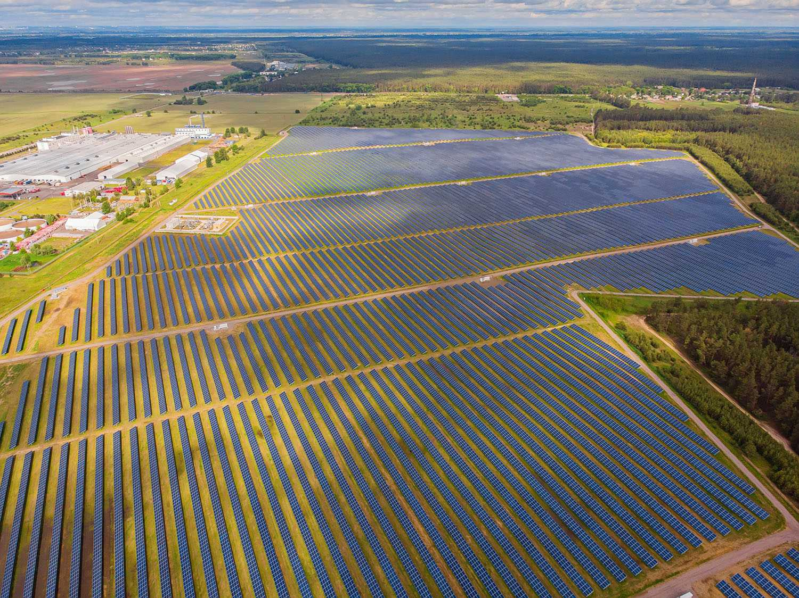

Rola Słońca w Transformacji Energetycznej
Fotowoltaika (PV) jest jednym z najszybciej rozwijających się sektorów odnawialnych źródeł energii (OZE) na świecie. Wykorzystując niewyczerpalne źródło, jakim jest promieniowanie słoneczne, farmy fotowoltaiczne przekształcają je bezpośrednio w energię elektryczną. Stanowią one fundament globalnej strategii dekarbonizacji, oferując czystą, cichą i skalowalną technologię produkcji energii – od małych instalacji prosumenckich po gigantyczne elektrownie słoneczne.
Dzięki spadającym kosztom technologii i rosnącej wydajności, fotowoltaika staje się konkurencyjna cenowo wobec konwencjonalnych źródeł energii, odgrywając kluczową rolę w zapewnieniu bezpieczeństwa energetycznego i dążeniu do celów klimatycznych.
Jak Działa Farma Fotowoltaiczna?
Proces produkcji energii w farmie fotowoltaicznej opiera się na zjawisku fotowoltaicznym, które zachodzi w półprzewodnikach. Składa się on z kilku kluczowych etapów i komponentów.
Elementy Systemu Fotowoltaicznego:
- Ogniwo fotowoltaiczne: To podstawowy element, najczęściej wykonany z krzemu. Gdy foton (cząstka światła) o odpowiedniej energii pada na ogniwo, wybija elektron z jego pozycji, zmuszając go do ruchu. Ten uporządkowany ruch elektronów to właśnie prąd elektryczny.
- Moduł (Panel) Fotowoltaiczny: Szereg połączonych ze sobą ogniw, umieszczonych w trwałej, odpornej na warunki atmosferyczne obudowie (zazwyczaj pod szkłem hartowanym). Pojedynczy panel generuje prąd stały (DC) o określonym napięciu i mocy.
- Inwerter (Falownik): To mózg całego systemu. Jego głównym zadaniem jest konwersja prądu stałego (DC) produkowanego przez panele na prąd przemienny (AC) o parametrach zgodnych z siecią publiczną (w Europie 230/400V, 50 Hz). Nowoczesne inwertery pełnią również funkcje monitorujące i optymalizujące pracę instalacji.
- System Montażowy (Konstrukcja nośna): Stalowe lub aluminiowe stelaże, które utrzymują panele pod odpowiednim kątem w stosunku do słońca, aby zmaksymalizować uzysk energii w ciągu roku.
- Transformator i Stacja elektroenergetyczna: W przypadku dużych farm, wyprodukowana energia jest zbierana, a jej napięcie jest podnoszone za pomocą transformatorów, aby umożliwić efektywny przesył na duże odległości poprzez krajową sieć energetyczną.
Rodzaje Technologii Fotowoltaicznych
Rynek fotowoltaiczny jest zdominowany przez technologie oparte na krzemie, ale rozwijane są również inne, innowacyjne rozwiązania.
Panele Krzemowe
- Monokrystaliczne: Wykonane z jednego, litego kryształu krzemu. Charakteryzują się najwyższą sprawnością (zwykle 19-23%) i ciemną, jednolitą barwą. Są droższe w produkcji, ale oferują największą wydajność z danej powierzchni.
- Polikrystaliczne: Produkowane z wielu skrystalizowanych fragmentów krzemu. Mają nieco niższą sprawność (17-19%) i charakterystyczną, niebieską teksturę z widocznymi granicami ziaren. Są tańsze i stanowiły popularny wybór w wielu projektach.
Panele Cienkowarstwowe (Thin-Film)
W tej technologii warstwa półprzewodnika jest nanoszona na podłoże (np. szkło lub folię). Do tej grupy należą panele CdTe (tellurek kadmu) oraz CIGS (miedź, ind, gal, selen). Ich główną zaletą jest lepsza wydajność w warunkach słabego oświetlenia i przy wysokich temperaturach, a także elastyczność niektórych wariantów. Ich sprawność jest jednak generalnie niższa niż paneli krzemowych.
Ekologia, Recykling i Zagospodarowanie Terenu
Fotowoltaika jest czystym źródłem energii, ale jej wdrożenie na dużą skalę wiąże się z pewnymi wyzwaniami środowiskowymi.
Zagospodarowanie Terenu (Agrowoltaika)
Wyzwanie: Duże farmy fotowoltaiczne wymagają znacznych powierzchni terenu, co może prowadzić do konfliktów o ziemię, zwłaszcza rolniczą.
Rozwiązanie: Coraz popularniejsza staje się agrowoltaika (agri-PV) – koncepcja polegająca na jednoczesnym prowadzeniu upraw rolnych i produkcji energii na tym samym obszarze. Panele montuje się na podwyższonych konstrukcjach, co pozwala na pracę maszyn rolniczych, a częściowe zacienienie może być korzystne dla niektórych gatunków roślin, chroniąc je przed nadmiernym słońcem i zmniejszając parowanie wody.
Recykling Paneli Fotowoltaicznych
Fakt: Żywotność paneli fotowoltaicznych wynosi średnio 25-30 lat. Po tym okresie wciąż produkują energię, choć z mniejszą wydajnością. Kluczowe staje się ich prawidłowe zagospodarowanie.
Proces: Panel fotowoltaiczny w ponad 90% składa się z surowców nadających się do ponownego przetworzenia. Proces recyklingu obejmuje:
- Demontaż ramy aluminiowej i skrzynki przyłączeniowej.
- Obróbka termiczna w celu oddzielenia szkła od warstwy ogniw.
- Odzysk szkła (ok. 75% masy panelu), które może być ponownie wykorzystane.
- Procesy chemiczne i metalurgiczne pozwalające na odzyskanie cennych metali, takich jak krzem, srebro i miedź.
W Unii Europejskiej proces recyklingu paneli jest regulowany przez dyrektywę WEEE, która nakłada na producentów obowiązek organizacji i finansowania zbiórki oraz przetwarzania zużytych modułów.